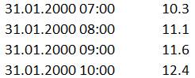

3 Database
This document contains the User and Technical Manuals of the RS MINERVE software. These manuals are constantly updated. This version corresponds to the Software version 2.9.1.
The different input data as well as exported results are managed within a database. The Database tab is used to create or edit the database linked to the active model.
3.1 The Database tab
The Database tab appears when a database is created ( New) or opened for edition (  Open and then Edit).
Open and then Edit).

The database structure is organized in five hierarchical levels, listed hereafter.
Database Description of the database, complete set of data
Group Separation based on category of data (Measures, Forecasts, Simulations,…)1
Dataset Set of data of common type (Meteo data, Flow data,…)
Station Information about the station (name and coordinates)
- Sensor Description of the sensor (name, units and data)
3.2 Creation of a database
The creation of a new database can be achieved following next steps:
Click on New in the Database frame (Figure 1) and save the new database. The Database tab is opened (Figure 3.1).
Create the components of the different hierarchical levels of your database by using the
 Add button (Edition frame).
Add button (Edition frame).For the stations, give an adequate name and enter the coordinates.
For each sensor:
Define the Description (name), Category, Unit and Interpolation method.
Select the “Values” tab and add the data with the Paste button (after copying them from any spreadsheet program).
Save the database.
The data can be managed (exported or imported) as database or as dataset.
To manage a database, proceed as follows:
To save a database: Click on the Database component \(\rightarrow\) File database \(\rightarrow\) Save as.
To load another database: Remove the current database and click on
 Open in the Database frame to open the new database.
Open in the Database frame to open the new database.
To manage a dataset, perform as follows:
To export a dataset: Click on the Dataset component \(\rightarrow\) File Dataset \(\rightarrow\) Save
To import a dataset: Click on a Group component \(\rightarrow\) File Dataset \(\rightarrow\) Import
If a dataset contained in a database is also stored separetely as a dataset (not only in the database), both have to be saved (File database \(\rightarrow\) Save; File dataset \(\rightarrow\) Save) to properly modify all the files!
3.3 Data format
For copying series values in a sensor, two columns are necessary. The first column contains the data in one of these formats:
dd.mm.yyyy
dd.mm.yyyy hh:mm
dd.mm.yyyy hh:mm:ss
The second column contains the values of the series (example in Figure 3.2).

3.4 Connection of a database to a model
Once the database is created, links between the model and the database have to be implemented. The Data source frame (Figure 3.3, left), located in the main interface and available only when a database is opened, is used for this purpose.
Define for the Station and the Source the corresponding Group and DataSet.
For the Source objects, define in the Object description frame the correct station under the Select from database button (Figure 3.3, right).2
The name of the station appears under Station identifier and is stored in the model when the model is saved.
Interaction between the database and the active model
Modifications of the database in Database tab (without saving them!) are taken into account during simulations of the active model. However, when the database is closed, only saved changes will be applied to the database. Therefore, proper saving of the modifications is recommended.